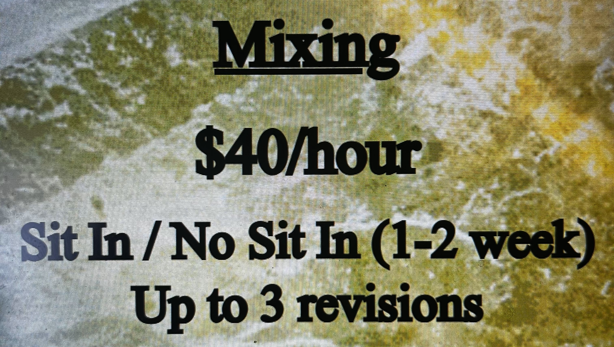
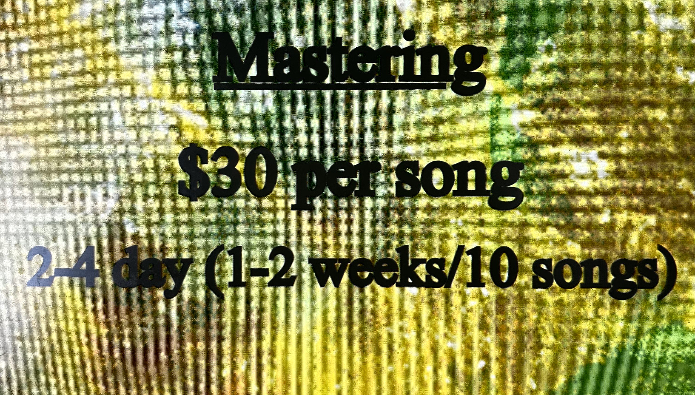

WM
Gear List & Services
Microphones
- Warm Audio WA-47 Tube
- Warm Audio WA-84
- Sennheiser 441
- Electro-Voice RE11
- Electro-Voice 635A
- Shure SM7b
- Shure SM57
- Shure Beta 58
- Shure SM58
- Sennheiser e609
- Sennheiser 935
- Homemade Low-Noise Telephone Microphone
- Homemade Guitar pickup Microphone
- Oktava MK-012-01
- Shure Green Bullet
- Aston Origin
- Gauge microphones (blue & gold) 12
- Akg c1000s
- akg c3000b
- Electrovoice ND478
- Lewitt MTP440DM
Instruments and Rigs
- 2013 Gibson SG Standard
- 1959 Harmony
- Yamaha G-55 Classical
- Gretsch Electromatic Bass
- Lanikai Ukelele
- SK2 Hammond organ
- Baldwin Baby Grand Piano
- Yamaha Stage Custom 5-Piece (no snare)
- Ludwig Superphonic snare
- Sabian Crash
- Zylophone
- Fender Deluxe Reverb
Production:

